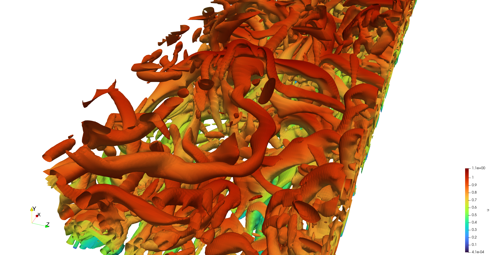
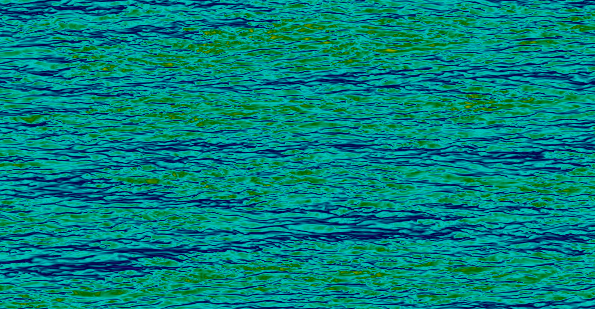
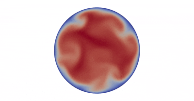
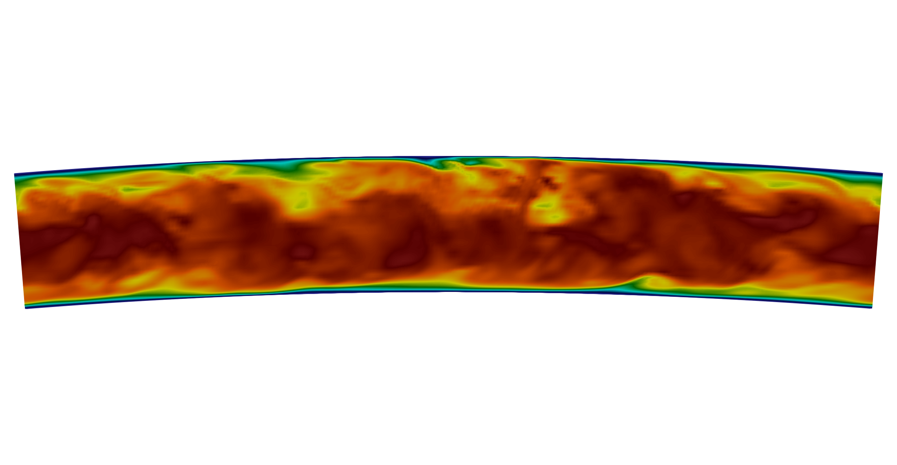

High-Fidelity Data
DNS and LES datasets with detailed simulation parameters, numerical settings, and validation information.
A curated collection of high-quality, open-access turbulence datasets for the scientific community.
Open Turbulence Database (OTD) provides a unified access point to high-fidelity turbulence datasets and numerical simulations. All datasets are openly accessible, carefully documented, and organized to support reproducible research. The database covers diverse turbulent flow configurations, numerical methods, and Reynolds numbers, enabling comparative analysis and data-driven discovery.
DNS and LES datasets with detailed simulation parameters, numerical settings, and validation information.
Channel, pipe, boundary layer, plane Couette, plane Poiseuille, and other turbulent flows covering a wide range of conditions.
Freely available datasets with documented metadata to support transparent and reproducible turbulence research.
Our database is continuously growing. We aim to support reproducible research and accelerate discovery in turbulence.
View All Datasets


